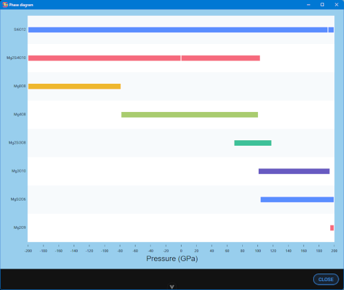

For variable composition sets, this window shows for each structure type the interval of pressures for which it lies on the convex hull. The range of pressures goes from -200 GPa to 200 GPa in steps of 0.1 GPa.
Hovering on each strip show the formula, the corresponding step in the input set and the range of pressures for which this structure is stable.
The vertical gaps in the strips signal the change of structure: different step but same composition.